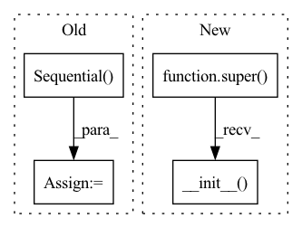

Pattern ID :2321

Before Change
layers[-1].weight.data.uniform_(-init_w, init_w)
layers[-1].bias.data.uniform_(-init_w, init_w)
self.net = nn.Sequential(*layers)
def forward(self, state, action):
x = torch.cat([state, action], 1)
out = self.net(x)
After Change
class Critic(nn.Module):
def __init__(self, in_dim, action_dim, hidden_dim, num_layers_linear_hidden):
super(Critic, self).__init__()
assert len(in_dim) == 1
assert len(action_dim) == 1
In pattern: SUPERPATTERN
Frequency: 3
Non-data size: 4
Instances
Fragment ID: 5477851
Project Name: tmdt-buw/karolos
Commit Name: e52d81127a965c7310bbce3f80dfda7aa7549561
Time: 2020-03-15
Author: scheiderer@uni-wuppertal.de
File Name: agents/nnfactory/sac.py
Class Name: SoftQNetwork
Method Name: __init__
Parent Class: nn.Module
Fragment ID: 5477850
Project Name: vlsomers/bpbreid
Commit Name: 710b9ac1a28d418bddc41aeeda320ab4de4d17fe
Time: 2018-10-26
Author: k.zhou@qmul.ac.uk
File Name: torchreid/models/resnet.py
Class Name: ResNet50M
Method Name: __init__
Parent Class: nn.Module
Fragment ID: 5477849
Project Name: tmdt-buw/karolos
Commit Name: e52d81127a965c7310bbce3f80dfda7aa7549561
Time: 2020-03-15
Author: scheiderer@uni-wuppertal.de
File Name: agents/nnfactory/sac.py
Class Name: PolicyNet
Method Name: __init__
Parent Class: nn.Module